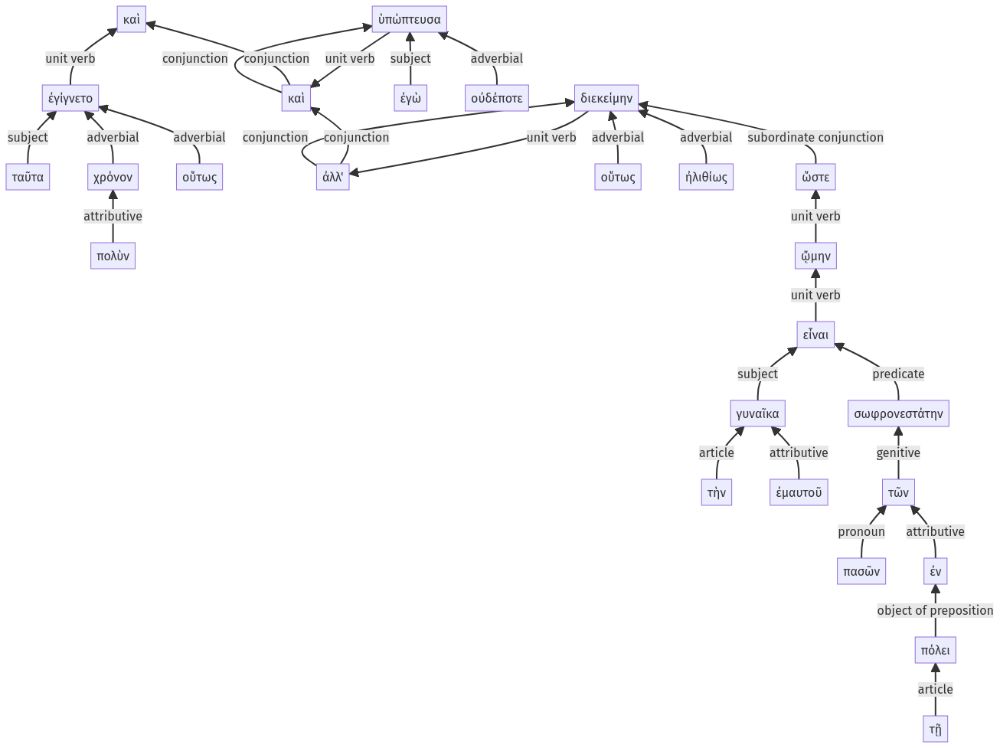

Lysias, 1.10.24-1.10.49a
1.10.1-1.10.23a | 1.11.1-1.11.28a
Sentence 21
1.10.24-1.10.49a
καὶ ταῦτα πολὺν χρόνον οὕτως ἐγίγνετο, καὶ ἐγὼ οὐδέποτε ὑπώπτευσα, ἀλλ' οὕτως ἠλιθίως διεκείμην, ὥστε ᾤμην τὴν ἐμαυτοῦ γυναῖκα πασῶν σωφρονεστάτην εἶναι τῶν ἐν τῇ πόλει.
1 ταῦτα πολὺν χρόνον οὕτως ἐγίγνετο
1 καὶ ἐγὼ οὐδέποτε ὑπώπτευσα
1 ἀλλ' οὕτως ἠλιθίως διεκείμην
2 ὥστε ᾤμην
3 τὴν ἐμαυτοῦ γυναῖκα πασῶν σωφρονεστάτην εἶναι τῶν ἐν τῇ πόλει
καὶ ταῦτα πολὺν χρόνον οὕτως ἐγίγνετο, καὶ ἐγὼ οὐδέποτε ὑπώπτευσα, ἀλλ' οὕτως ἠλιθίως διεκείμην, ὥστε ᾤμην τὴν ἐμαυτοῦ γυναῖκα πασῶν σωφρονεστάτην εἶναι τῶν ἐν τῇ πόλει.
Highlighting:
- connecting words
- unit verb
- subject
- object
Color code:
- independent clause (level 1, linking verb)
- independent clause (level 1, transitive verb)
- independent clause (level 1, intransitive verb)
- subordinate clause (level 2, transitive verb)
- indirect statement with infinitive (level 3, linking verb)
